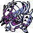

#369
Golisopod
BugWater
Abilities: Battle Armor
Base stats BST 530
HP75
Attack125
Defense140
Speed40
Sp. Atk60
Sp. Def90
Evolution
None detected.
Level-up learnset
LevelMoveType
Lv. 1First Impression—
Lv. 1Defense CurlNormal
Lv. 1Sand AttackGround
Lv. 1SpiteGhost
Lv. 1Struggle BugBug
Lv. 4Rock SmashFighting
Lv. 8Fury CutterBug
Lv. 16Bug BiteBug
Lv. 24Sucker PunchDark
Lv. 28SlashNormal
Lv. 36Pin MissileBug
Lv. 40Swords DanceNormal
Lv. 44LiquidationWater